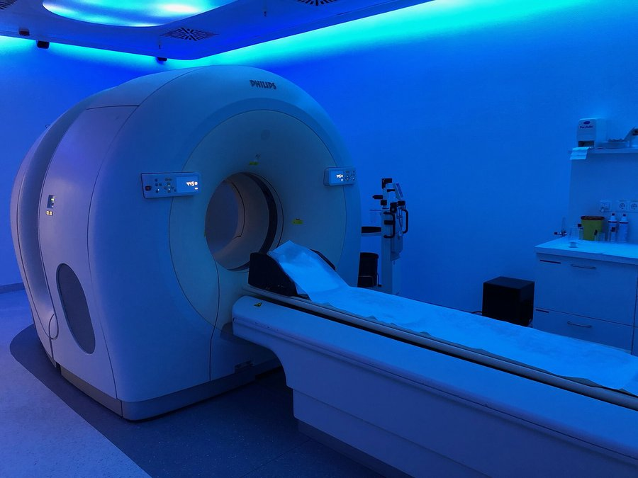

التصوير بالإصدار البوزيترونيPET
How it works فكرة الجهاز ببساطة
يُحقن المريض مادة مشعة (tracer)، أشهرها FDG: سكر مرتبط بـF-18.
المادة تُطلق positron يلتقي بإلكترون فيختفيان، ويخرج فوتونا غاما (511 keV) باتجاهين متعاكسين.
حلقة الكواشف تلتقط الفوتونين معاً، فيحدد الحاسوب مكان المصدر.
الخلايا التي تستهلك سكراً كثيراً (مثل كثير من الأورام) تظهر بقعاً ساطعة. يُدمج عادةً مع المفراس (PET/CT).

⭐ Top 3 points أهم 3 نقاط
- مادة مشعة (FDG) تُحقن وتتجمع حيث يُستهلك السكر.
- بوزيترون + إلكترون = فوتونا غاما متعاكسان تلتقطهما حلقة الكواشف.
- يبيّن وظيفة النسيج: الأورام، الدماغ، القلب، والالتهابات.